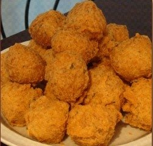

For eZer acess
In the beginning, which is 1972, a genius named, Alvin C. Copeland, makes a resturaunt called "Chicken on the run," in "New Orleans suburb of Arabi." The place sold southern fried chicken! However, the place wasn't a great hit and not many people went to it for food. After a few months, Alvin had another GREAT idea and remakes the restaurant and names the new restaurant, "Popeyes". He sold spicy chicken, New Orleans style. In 1983 someone had another BRILLIANT idea. They now had buttermilk in their kitchen and they used it to make biscuits. By 1999, Popeyes has 1000 not 100, not 200 1000! resturaunts! In 2002, Popeyes is finally 30 years old! In 2009, Popeyes adds another item to eat. It is the Butterfly shrimp tackle box! In 2010, Popeyes adds more food. Now they made Wicked Chicken! It was awarded BEST LIMITED TIME OFFER.(all the images of the food will be shown below.) When 2011 comes by, popeyes has 2000 resturaunts this time. In the course of 12 YEARS they had 1,000 MORE resturaunts than before! 1 year later, after all this, popeyes now is 40 years old! Congratulations Popeyes, Congratulations.
Now comes the part where you all get to look at the food!
These are all the foods that are included in the history above. (note that this is not the whole history of the creation of popeyes. To see the whole history go to...
Popeyes
In China, long ago, like 8,200-13,500 years ago, Shennong, an emporor of China, domesticated rice in the Pearl River but later it was suggested that rice had been domesticated
in the Yangtze River. (this is a Chinese Legend by the way.) From East Asia, rice spread to the Southeast and the South of Asia. From there it spread to Europe from Western Asia.
How to make rice is with uncooked rice, a rice cooker, and water. As seen in this video...
One day in China, a person had an idea... to fry the rice with vegtables, eggs, and meats! Thus began FRIED RICE! People in China made fried rice for banquets and in America, it is sold as fast food. If you want to make it you need to get a pan and some ingredients. Please Note:Fish sauce and sugar are not required, you can add it if you want. You can also watch the video which teaches you what to do with these ingredients below. You need,
Now for the pictures!
Then you can drink with ANY of the foods in this whole webpage below!
For all this information and more, go to WikiPedia for Rice! and WikiPedia for Fried Rice!
My 3rd favorite food, Crab Balls are only at weddings so if you know someone that has a wedding, please contact me :). A picture of crab balls are below.

I don't have any information at all about these but they are delicious! All I know is it is made out of crab and looks like it is fried in a shape of
a ball.
Now with all your newfound knowlege, you SHALL... do the quiz on google forms. haha just kidding I removed it because I made this in middle school :D
To see part 2 of this, click that link! Part 2